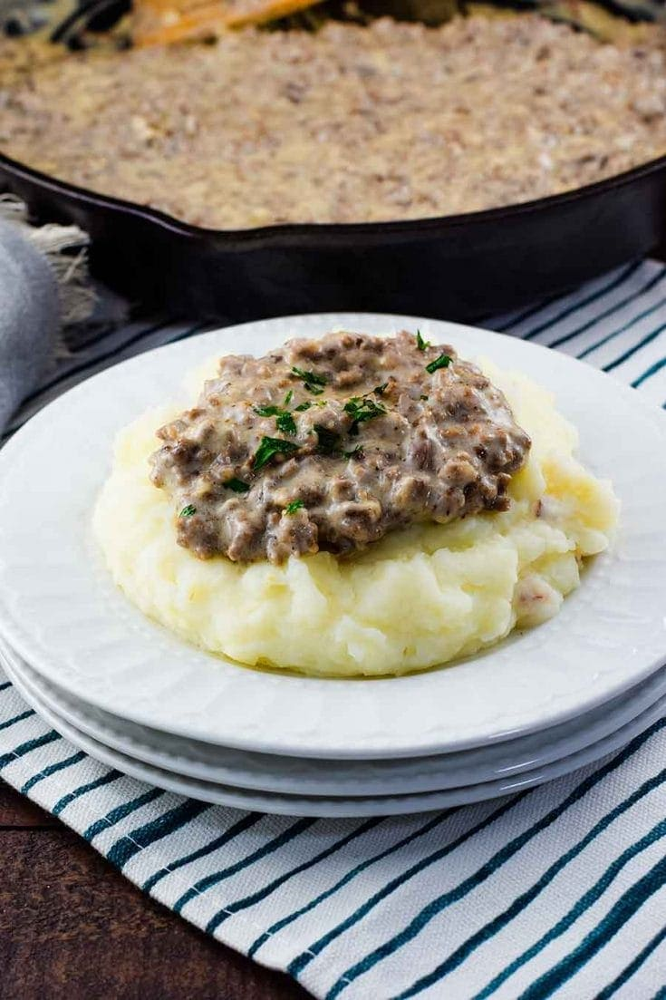

Hamburger Gravy

Description
Classic hamburger gravy recipe, another classic grandma recipe. Too bad I cant get my wife to eat this more. Eat over mashed potatoes for an instant classic.
What you will need
- 1 can condensed mushroom soup
- 1 can condensed cream of celery soup
- 2 lbs ground beef (85% lean)
- 1 can milk
- 1 yellow onion (medium, diced)
Steps
- Brown beef in a scauce pan with yellow onion
- Drain greese
- Mix in cream of mushroom soup, cream of celery soup and milk
- Serve over baked, or mashed potatoes